| EGit 2.0 New and Noteworthy |
|
|

|
|
|
GitHub Mylyn Connector Features |
EGit Features
Stash Support
- Support to create stashed commits
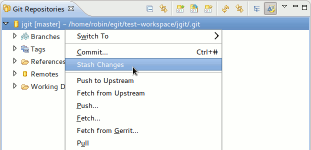
- Support to apply stashed commits to the index and working tree
- Support for dropping stashed commits
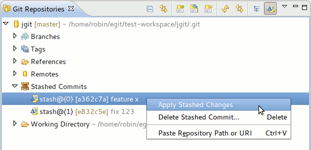
- New stash option in branch result dialog. This allows to quickly stash any conflicting changes that are preventing a branch from being checked out.
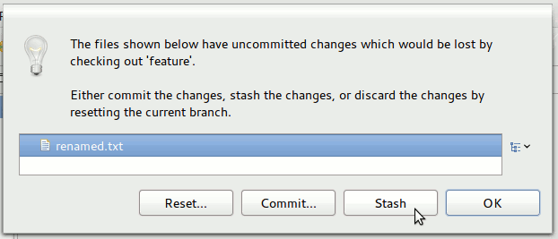
Allow push of single Refs/Commits from Repositories & History Views
This adds a new SimplePushWizard which allows selecting a target
remote and ref name. It then pushes out the selected Ref/Commit to the
selected target ref.
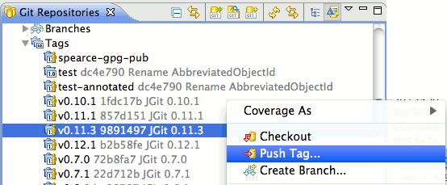
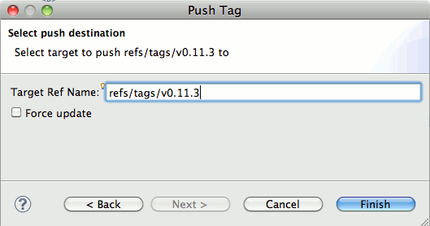
Support for "workspace patches"
Workspace-aware patches include comments to tell the Apply Patch wizard
about the target projects for individual diffs. They contain enough
information to allow the wizard to decide which resources need to be
patched.
Also allow to save patches in the workspace.
Preemptively close missing projects when switching branches
When checking out another branch look for projects that differ between the current branch, target branch, and working directory and
close any projects not available on target branch before checkout begins.
Reopened projects are now also refreshed after being opened
in order to keep the Eclipse resource model in sync with the
working directory changes.
This adds extensions required to clone/import a plug-in's git repository using SCM URL from its
MANIFEST.MF. To give it a try, open Plug-ins view, select a plug-in and click "Import As > Project from a Repository...". Then follow
instructions in the wizard. Importing with a tag is not supported yet, see
bug 367712.
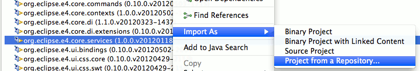
Note: This feature can be installed on Eclipse 4.2 and higher since it requires at least Team API 3.6.100.
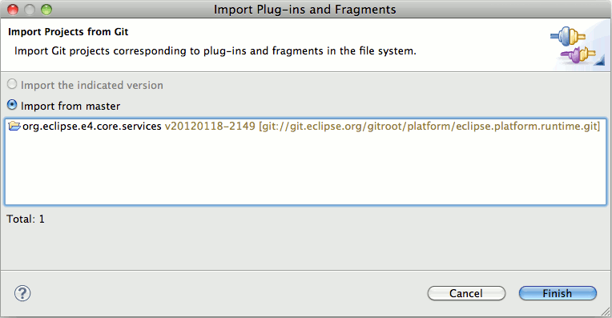
Other Improvements
History View Improvements
- Table layout was improved
- New option to allow hiding email address of committer and author
- New "committed date" column
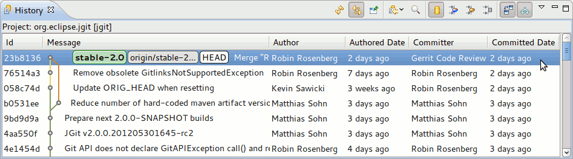
- Incremental loading of history improves performance and significantly reduces memory footprint. Incremental loading is disabled if the find toolbar is enabled.
- Add command to rename branches
- New option to suppress displaying of additional Refs like FETCH_HEAD, ORIG_HEAD
- Show commit in history view when annotation is selected. "Team > Annotations" now shows/selects the commit in the history view when a revision is selected.
- New command "Show Annotations" in context menu of the history view table when the input is a single file. Running the action will open the editor with the file blamed starting at the selected commit. The same command is added to the context menu of the file list in the History View's "Revision Details" pane.
- When creating a new branch the first found remote referring to the selected commit is selected as the default source of the new branch.
Staging View Improvements
- Supports content assist for file names and commit messages (using Ctrl+Space):
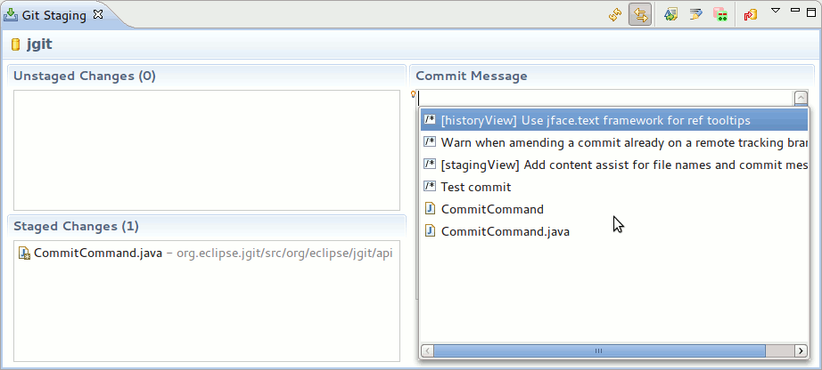
- Add command "Replace with HEAD"
- Support for discarding changes of non-workspace files
- Staging View now uses the global IndexDiffCache, this reduces EGit's memory footprint and ensures consistency with resource decorations
- Option to show whitespace characters in Staging View and Commit Dialog
- Warns when amending a commit that is already pushed (when the commit is on a remote tracking branch)
- New "Copy" command to copy the currently selected commit id into the clipboard
Repositories View Improvements
- For references, branches and tags show the abbreviated SHA-1 followed by the short message of the commit that SHA-1 points to:
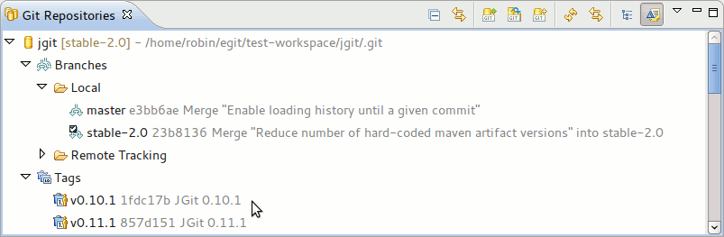
- On branch nodes allow to show/edit branch configuration
- Git command group actions now also work when selecting one or several repositories in the Repositories View
- Simplified configure fetch and configure push dialogs
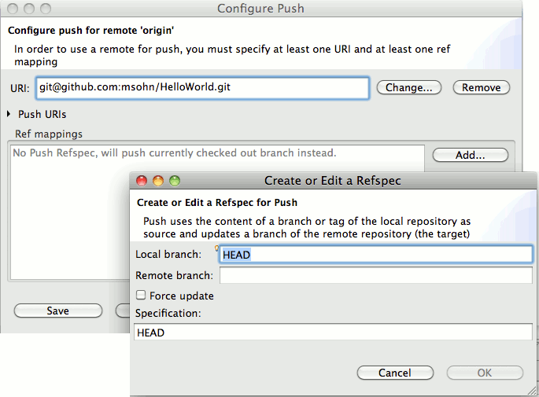
- Allow to fetch/push on remote nodes
Configuration
- Enable using variables to set the default clone destination in the preferences. With this, it's now possible to configure it to always clone into workspace, using ${workspace_loc}
- Add configuration option for core.streamFileThreshold in preferences
- Configuration editor in preferences now supports editing configuration values directly in tree
- New command "Remove from Index" to enable unstaging staged changes from the team menu
- New command "Replace with > Previous Revision" to replace the selected resources with the version preceding HEAD
- Rename support for "Compare With > Previous Revision"
- Add merge button to Git Actions Toolbar
Miscellaneous
- Add Commit... and Reset... buttons to checkout conflict dialog
- Add "Revert" action to Commit Editor
|
|
|
|
|
GitHub Mylyn Connector Features |